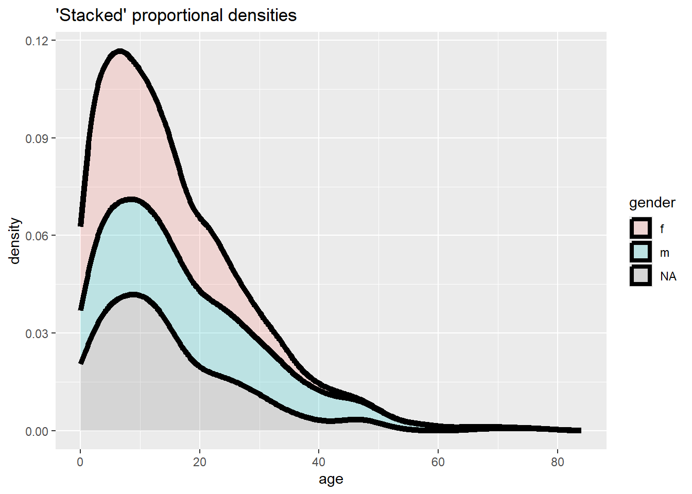
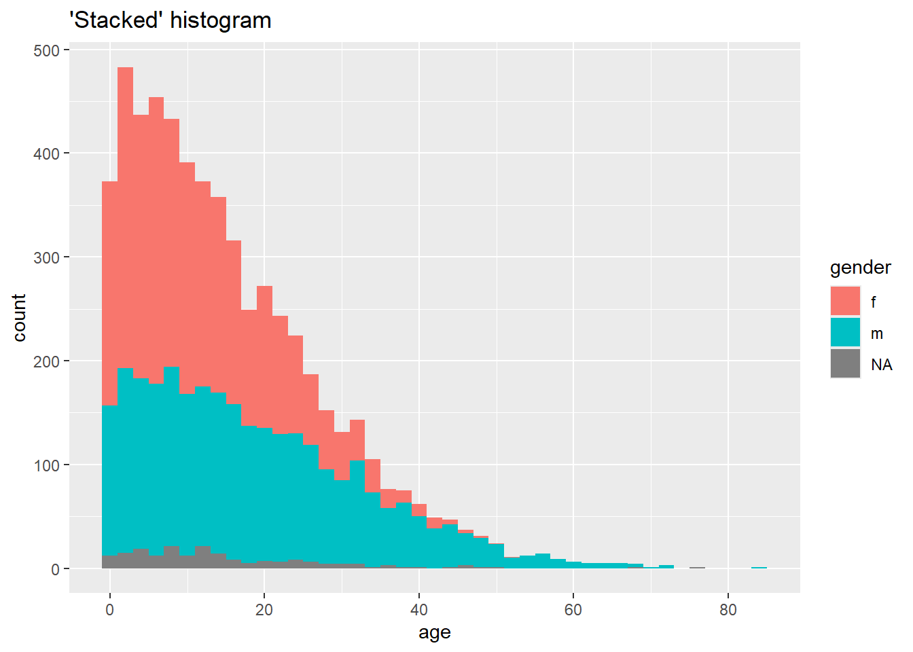
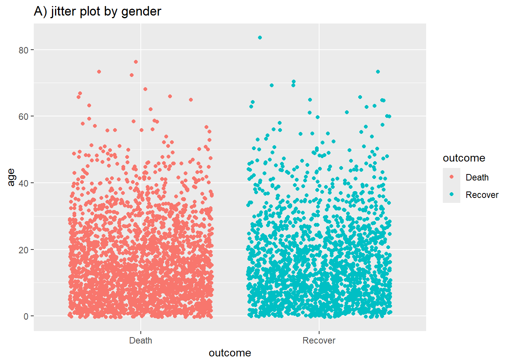
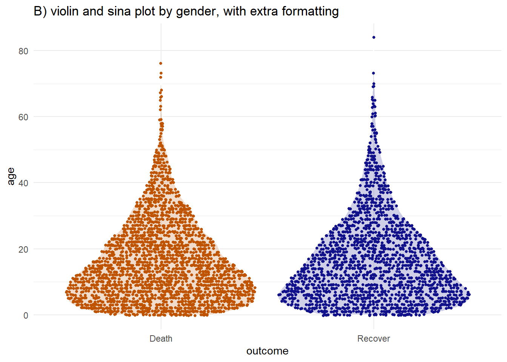

ggplot()
facet_wrap()
facet_grid()
geom_bar()
geom_col()
geom_histogram()
ggplot2 is the most popular data visualisation R package. Its ggplot() function is at the core of this package, and this whole approach is colloquially known as “ggplot” with the resulting figures sometimes affectionately called “ggplots”. The “gg” in these names reflects the “grammar of graphics” used to construct the figures. ggplot2 benefits from a wide variety of supplementary R packages that further enhance its functionality.
The syntax is significantly different from base R plotting, and has a learning curve associated with it. Using ggplot2 generally requires the user to format their data in a way that is highly tidyverse compatible, which ultimately makes using these packages together very effective.
R
In this page we will cover the fundamentals of plotting with ggplot2. See the page ggplot tips for suggestions and advanced techniques to make your plots really look nice.
There are several extensive ggplot2 tutorials linked in the resources section. You can also download this data visualization with ggplot cheatsheet from the RStudio website. If you want inspiration for ways to creatively visualise your data, we suggest reviewing websites like the R graph gallery and Data-to-viz.
This code chunk shows the loading of packages required for the analyses. In this handbook we emphasize p_load() from pacman, which installs the package if necessary and loads it for use. You can also load installed packages with library() from base R. See the page on R basics for more information on R packages.
p_load()
library()
pacman::p_load( tidyverse, # includes ggplot2 and other data management tools janitor, # cleaning and summary tables ggforce, # ggplot extras rio, # import/export here, # file locator stringr # working with characters )
We import the dataset of cases from a simulated Ebola epidemic. If you want to follow along, click to download the “clean” linelist (as .rds file). Import your data with the import() function from the rio package (it accepts many file types like .xlsx, .rds, .csv - see the Import and export page for details).
import()
linelist <- rio::import("linelist_cleaned.rds")
The first 50 rows of the linelist are displayed below. We will focus on the continuous variables age, wt_kg (weight in kilos), ct_blood (CT values), and days_onset_hosp (difference between onset date and hospitalisation).
age
wt_kg
ct_blood
days_onset_hosp
When preparing data to plot, it is best to make the data adhere to “tidy” data standards as much as possible. How to achieve this is expanded on in the data management pages of this handbook, such as Cleaning data and core functions.
Some simple ways we can prepare our data to make it better for plotting can include making the contents of the data better for display - which does not necessarily equate to better for data manipulation. For example:
NA
Here are some examples of this in action:
# make display version of columns with more friendly names linelist <- linelist %>% mutate( gender_disp = case_when(gender == "m" ~ "Male", # m to Male gender == "f" ~ "Female", # f to Female, is.na(gender) ~ "Unknown"), # NA to Unknown outcome_disp = replace_na(outcome, "Unknown") # replace NA outcome with "unknown" )
As a matter of data structure, for ggplot2 we often also want to pivot our data into longer formats. Read more about this is the page on Pivoting data.
For example, say that we want to plot data that are in a “wide” format, such as for each case in the linelist and their symptoms. Below we create a mini-linelist called symptoms_data that contains only the case_id and symptoms columns.
linelist
symptoms_data
case_id
symptoms_data <- linelist %>% select(c(case_id, fever, chills, cough, aches, vomit))
Here is how the first 50 rows of this mini-linelist look - see how they are formatted “wide” with each symptom as a column:
If we wanted to plot the number of cases with specific symptoms, we are limited by the fact that each symptom is a specific column. However, we can pivot the symptoms columns to a longer format like this:
symptoms_data_long <- symptoms_data %>% # begin with "mini" linelist called symptoms_data pivot_longer( cols = -case_id, # pivot all columns except case_id (all the symptoms columns) names_to = "symptom_name", # assign name for new column that holds the symptoms values_to = "symptom_is_present") %>% # assign name for new column that holds the values (yes/no) mutate(symptom_is_present = replace_na(symptom_is_present, "unknown")) # convert NA to "unknown"
Here are the first 50 rows. Note that case has 5 rows - one for each possible symptom. The new columns symptom_name and symptom_is_present are the result of the pivot. Note that this format may not be very useful for other operations, but is useful for plotting.
symptom_name
symptom_is_present
“Grammar of graphics” - ggplot2
Plotting with ggplot2 is based on “adding” plot layers and design elements on top of one another, with each command added to the previous ones with a plus symbol (+). The result is a multi-layer plot object that can be saved, modified, printed, exported, etc.
+
ggplot objects can be highly complex, but the basic order of layers will usually look like this:
geom_
A simple example of skeleton code is as follows. We will explain each component in the sections below.
# plot data from my_data columns as red points ggplot(data = my_data) + # use the dataset "my_data" geom_point( # add a layer of points (dots) mapping = aes(x = col1, y = col2), # "map" data column to axes color = "red") + # other specification for the geom labs() + # here you add titles, axes labels, etc. theme() # here you adjust color, font, size etc of non-data plot elements (axes, title, etc.)
The opening command of any ggplot2 plot is ggplot(). This command simply creates a blank canvas upon which to add layers. It “opens” the way for further layers to be added with a + symbol.
Typically, the command ggplot() includes the data = argument for the plot. This sets the default dataset to be used for subsequent layers of the plot.
data =
This command will end with a + after its closing parentheses. This leaves the command “open”. The ggplot will only execute/appear when the full command includes a final layer without a + at the end.
# This will create plot that is a blank canvas ggplot(data = linelist)
A blank canvas is certainly not sufficient - we need to create geometries (shapes) from our data (e.g. bar plots, histograms, scatter plots, box plots).
This is done by adding layers “geoms” to the initial ggplot() command. There are many ggplot2 functions that create “geoms”. Each of these functions begins with “geom_”, so we will refer to them generically as geom_XXXX(). There are over 40 geoms in ggplot2 and many others created by fans. View them at the ggplot2 gallery. Some common geoms are listed below:
geom_XXXX()
geom_boxplot()
geom_point()
geom_line()
geom_path()
geom_smooth()
In one plot you can display one or multiple geoms. Each is added to previous ggplot2 commands with a +, and they are plotted sequentially such that later geoms are plotted on top of previous ones.
Most geom functions must be told what to use to create their shapes - so you must tell them how they should map (assign) columns in your data to components of the plot like the axes, shape colors, shape sizes, etc. For most geoms, the essential components that must be mapped to columns in the data are the x-axis, and (if necessary) the y-axis.
This “mapping” occurs with the mapping = argument. The mappings you provide to mapping must be wrapped in the aes() function, so you would write something like mapping = aes(x = col1, y = col2), as shown below.
mapping =
mapping
aes()
mapping = aes(x = col1, y = col2)
Below, in the ggplot() command the data are set as the case linelist. In the mapping = aes() argument the column age is mapped to the x-axis, and the column wt_kg is mapped to the y-axis.
mapping = aes()
After a +, the plotting commands continue. A shape is created with the “geom” function geom_point(). This geom inherits the mappings from the ggplot() command above - it knows the axis-column assignments and proceeds to visualize those relationships as points on the canvas.
ggplot(data = linelist, mapping = aes(x = age, y = wt_kg)) + geom_point()
As another example, the following commands utilize the same data, a slightly different mapping, and a different geom. The geom_histogram() function only requires a column mapped to the x-axis, as the counts y-axis is generated automatically.
ggplot(data = linelist, mapping = aes(x = age)) + geom_histogram()
In ggplot terminology a plot “aesthetic” has a specific meaning. It refers to a visual property of plotted data. Note that “aesthetic” here refers to the data being plotted in geoms/shapes - not the surrounding display such as titles, axis labels, background color, that you might associate with the word “aesthetics” in common English. In ggplot those details are called “themes” and are adjusted within a theme() command (see this section).
theme()
Therefore, plot object aesthetics can be colors, sizes, transparencies, placement, etc. of the plotted data. Not all geoms will have the same aesthetic options, but many can be used by most geoms. Here are some examples:
shape =
fill =
color =
size =
alpha =
binwidth =
width =
linetype =
These plot object aesthetics can be assigned values in two ways:
color = "blue"
color = hospital
If you want the plot object aesthetic to be static, that is - to be the same for every observation in the data, you write its assignment within the geom but outside of any mapping = aes() statement. These assignments could look like size = 1 or color = "blue". Here are two examples:
size = 1
# scatterplot ggplot(data = linelist, mapping = aes(x = age, y = wt_kg)) + # set data and axes mapping geom_point(color = "darkgreen", size = 0.5, alpha = 0.2) # set static point aesthetics # histogram ggplot(data = linelist, mapping = aes(x = age)) + # set data and axes geom_histogram( # display histogram binwidth = 7, # width of bins color = "red", # bin line color fill = "blue", # bin interior color alpha = 0.1) # bin transparency
The alternative is to scale the plot object aesthetic by the values in a column. In this approach, the display of this aesthetic will depend on that observation’s value in that column of the data. If the column values are continuous, the display scale (legend) for that aesthetic will be continuous. If the column values are discrete, the legend will display each value and the plotted data will appear as distinctly “grouped” (read more in the grouping section of this page).
To achieve this, you map that plot aesthetic to a column name (not in quotes). This must be done within a mapping = aes() function (note: there are several places in the code you can make these mapping assignments, as discussed below.
Two examples are below.
# scatterplot ggplot(data = linelist, # set data mapping = aes( # map aesthetics to column values x = age, # map x-axis to age y = wt_kg, # map y-axis to weight color = age) ) + # map color to age geom_point() # display data as points # scatterplot ggplot(data = linelist, # set data mapping = aes( # map aesthetics to column values x = age, # map x-axis to age y = wt_kg, # map y-axis to weight color = age, # map color to age size = age)) + # map size to age geom_point( # display data as points shape = "diamond", # points display as diamonds alpha = 0.3) # point transparency at 30%
Note: Axes assignments are always assigned to columns in the data (not to static values), and this is always done within mapping = aes().
It becomes important to keep track of your plot layers and aesthetics when making more complex plots - for example plots with multiple geoms. In the example below, the size = aesthetic is assigned twice - once for geom_point() and once for geom_smooth() - both times as a static value.
ggplot(data = linelist, mapping = aes( # map aesthetics to columns x = age, y = wt_kg, color = age_years) ) + geom_point( # add points for each row of data size = 1, alpha = 0.5) + geom_smooth( # add a trend line method = "lm", # with linear method size = 2) # size (width of line) of 2
Aesthetic mapping within mapping = aes() can be written in several places in your plotting commands and can even be written more than once. This can be written in the top ggplot() command, and/or for each individual geom beneath. The nuances include:
x =
y =
Likewise, data = specified in the top ggplot() will apply by default to any geom below, but you could also specify data for each geom (but this is more difficult).
Thus, each of the following commands will create the same plot:
# These commands will produce the exact same plot ggplot(data = linelist, mapping = aes(x = age)) + geom_histogram() ggplot(data = linelist) + geom_histogram(mapping = aes(x = age)) ggplot() + geom_histogram(data = linelist, mapping = aes(x = age))
You can easily group the data and “plot by group”. In fact, you have already done this!
Assign the “grouping” column to the appropriate plot aesthetic, within a mapping = aes(). Above, we demonstrated this using continuous values when we assigned point size = to the column age. However this works the same way for discrete/categorical columns.
For example, if you want points to be displayed by gender, you would set mapping = aes(color = gender). A legend automatically appears. This assignment can be made within the mapping = aes() in the top ggplot() command (and be inherited by the geom), or it could be set in a separate mapping = aes() within the geom. Both approaches are shown below:
mapping = aes(color = gender)
ggplot(data = linelist, mapping = aes(x = age, y = wt_kg, color = gender)) + geom_point(alpha = 0.5)
# This alternative code produces the same plot ggplot(data = linelist, mapping = aes(x = age, y = wt_kg)) + geom_point( mapping = aes(color = gender), alpha = 0.5)
Note that depending on the geom, you will need to use different arguments to group the data. For geom_point() you will most likely use color =, shape = or size =. Whereas for geom_bar() you are more likely to use fill =. This just depends on the geom and what plot aesthetic you want to reflect the groupings.
For your information - the most basic way of grouping the data is by using only the group = argument within mapping = aes(). However, this by itself will not change the colors, fill, or shapes. Nor will it create a legend. Yet the data are grouped, so statistical displays may be affected.
group =
To adjust the order of groups in a plot, see the ggplot tips page or the page on Factors. There are many examples of grouped plots in the sections below on plotting continuous and categorical data.
Facets, or “small-multiples”, are used to split one plot into a multi-panel figure, with one panel (“facet”) per group of data. The same type of plot is created multiple times, each one using a sub-group of the same dataset.
Faceting is a functionality that comes with ggplot2, so the legends and axes of the facet “panels” are automatically aligned. There are other packages discussed in the ggplot tips page that are used to combine completely different plots (with patchwork) into one figure.
Faceting is done with one of the following ggplot2 functions:
nrow = 1
ncol = 1
nrow
ncol
Each of these functions accept a formula syntax to specify the column(s) for faceting. Both accept up to two columns, one on each side of a tilde ~.
~
For facet_wrap() most often you will write only one column preceded by a tilde ~ like facet_wrap(~hospital). However you can write two columns facet_wrap(outcome ~ hospital) - each unique combination will display in a separate panel, but they will not be arranged in a grid. The headings will show combined terms and these won’t be specific logic to the columns vs. rows. If you are providing only one faceting variable, a period . is used as a placeholder on the other side of the formula - see the code examples.
facet_wrap(~hospital)
facet_wrap(outcome ~ hospital)
.
For facet_grid() you can also specify one or two columns to the formula (grid rows ~ columns). If you only want to specify one, you can place a period . on the other side of the tilde like facet_grid(. ~ hospital) or facet_grid(hospital ~ .).
rows ~ columns
facet_grid(. ~ hospital)
facet_grid(hospital ~ .)
Facets can quickly contain an overwhelming amount of information - its good to ensure you don’t have too many levels of each variable that you choose to facet by. Here are some quick examples with the malaria dataset (see Download handbook and data) which consists of daily case counts of malaria for facilities, by age group.
Below we import and do some quick modifications for simplicity:
# These data are daily counts of malaria cases, by facility-day malaria_data <- import(here("data", "malaria_facility_count_data.rds")) %>% # import select(-submitted_date, -Province, -newid) # remove unneeded columns
The first 50 rows of the malaria data are below. Note there is a column malaria_tot, but also columns for counts by age group (these will be used in the second, facet_grid() example).
malaria_tot
For the moment, let’s focus on the columns malaria_tot and District. Ignore the age-specific count columns for now. We will plot epidemic curves with geom_col(), which produces a column for each day at the specified y-axis height given in column malaria_tot (the data are already daily counts, so we use geom_col() - see the “Bar plot” section below).
District
When we add the command facet_wrap(), we specify a tilde and then the column to facet on (District in this case). You can place another column on the left side of the tilde, - this will create one facet for each combination - but we recommend you do this with facet_grid() instead. In this use case, one facet is created for each unique value of District.
# A plot with facets by district ggplot(malaria_data, mapping = aes(x = data_date, y = malaria_tot)) + geom_col(width = 1, fill = "darkred") + # plot the count data as columns theme_minimal() + # simplify the background panels labs( # add plot labels, title, etc. x = "Date of report", y = "Malaria cases", title = "Malaria cases by district") + facet_wrap(~District) # the facets are created
We can use a facet_grid() approach to cross two variables. Let’s say we want to cross District and age. Well, we need to do some data transformations on the age columns to get these data into ggplot-preferred “long” format. The age groups all have their own columns - we want them in a single column called age_group and another called num_cases. See the page on Pivoting data for more information on this process.
age_group
num_cases
malaria_age <- malaria_data %>% select(-malaria_tot) %>% pivot_longer( cols = c(starts_with("malaria_rdt_")), # choose columns to pivot longer names_to = "age_group", # column names become age group values_to = "num_cases" # values to a single column (num_cases) ) %>% mutate( age_group = str_replace(age_group, "malaria_rdt_", ""), age_group = forcats::fct_relevel(age_group, "5-14", after = 1))
Now the first 50 rows of data look like this:
When you pass the two variables to facet_grid(), easiest is to use formula notation (e.g. x ~ y) where x is rows and y is columns. Here is the plot, using facet_grid() to show the plots for each combination of the columns age_group and District.
x ~ y
ggplot(malaria_age, mapping = aes(x = data_date, y = num_cases)) + geom_col(fill = "darkred", width = 1) + theme_minimal() + labs( x = "Date of report", y = "Malaria cases", title = "Malaria cases by district and age group" ) + facet_grid(District ~ age_group)
The axes scales displayed when faceting are by default the same (fixed) across all the facets. This is helpful for cross-comparison, but not always appropriate.
When using facet_wrap() or facet_grid(), we can add scales = "free_y" to “free” or release the y-axes of the panels to scale appropriately to their data subset. This is particularly useful if the actual counts are small for one of the subcategories and trends are otherwise hard to see. Instead of “free_y” we can also write “free_x” to do the same for the x-axis (e.g. for dates) or “free” for both axes. Note that in facet_grid, the y scales will be the same for facets in the same row, and the x scales will be the same for facets in the same column.
scales = "free_y"
facet_grid
When using facet_grid only, we can add space = "free_y" or space = "free_x" so that the actual height or width of the facet is weighted to the values of the figure within. This only works if scales = "free" (y or x) is already applied.
space = "free_y"
space = "free_x"
scales = "free"
# Free y-axis ggplot(malaria_data, mapping = aes(x = data_date, y = malaria_tot)) + geom_col(width = 1, fill = "darkred") + # plot the count data as columns theme_minimal() + # simplify the background panels labs( # add plot labels, title, etc. x = "Date of report", y = "Malaria cases", title = "Malaria cases by district - 'free' x and y axes") + facet_wrap(~District, scales = "free") # the facets are created
See this post on how to re-order factor levels within facets.
By default when you run a ggplot() command, the plot will be printed to the Plots RStudio pane. However, you can also save the plot as an object by using the assignment operator <- and giving it a name. Then it will not print unless the object name itself is run. You can also print it by wrapping the plot name with print(), but this is only necessary in certain circumstances such as if the plot is created inside a for loop used to print multiple plots at once (see Iteration, loops, and lists page).
<-
print()
# define plot age_by_wt <- ggplot(data = linelist, mapping = aes(x = age_years, y = wt_kg, color = age_years)) + geom_point(alpha = 0.1) # print age_by_wt
One nice thing about ggplot2 is that you can define a plot (as above), and then add layers to it starting with its name. You do not have to repeat all the commands that created the original plot!
For example, to modify the plot age_by_wt that was defined above, to include a vertical line at age 50, we would just add a + and begin adding additional layers to the plot.
age_by_wt
age_by_wt + geom_vline(xintercept = 50)
Exporting ggplots is made easy with the ggsave() function from ggplot2. It can work in two ways, either:
ggsave()
ggsave(my_plot, here("plots", "my_plot.png"))
ggsave(here("plots", "my_plot.png"))
You can export as png, pdf, jpeg, tiff, bmp, svg, or several other file types, by specifying the file extension in the file path.
You can also specify the arguments width =, height =, and units = (either “in”, “cm”, or “mm”). You can also specify dpi = with a number for plot resolution (e.g. 300). You can also change the the background of your plot by using the argument bg =, where you specify the colour, i.e. bg = "white". See the function details by entering?ggsave` or reading the documentation online.
height =
units =
dpi =
bg =
bg = "white". See the function details by entering
You can also specify the arguments width =, height =, and units = (either “in”, “cm”, or “mm”). You can also specify dpi = with a number for plot resolution (e.g. 300). See the function details by entering ?ggsave or reading the documentation online.
?ggsave
Remember that you can use here() syntax to provide the desired file path. see the Import and export page for more information.
here()
Surely you will want to add or adjust the plot’s labels. These are most easily done within the labs() function which is added to the plot with + just as the geoms were.
labs()
Within labs() you can provide character strings to these arguements:
title =
subtitle =
caption =
Here is a plot we made earlier, but with nicer labels:
age_by_wt <- ggplot( data = linelist, # set data mapping = aes( # map aesthetics to column values x = age, # map x-axis to age y = wt_kg, # map y-axis to weight color = age)) + # map color to age geom_point() + # display data as points labs( title = "Age and weight distribution", subtitle = "Fictional Ebola outbreak, 2014", x = "Age in years", y = "Weight in kilos", color = "Age", caption = stringr::str_glue("Data as of {max(linelist$date_hospitalisation, na.rm=T)}")) age_by_wt
Note how in the caption assignment we used str_glue() from the stringr package to implant dynamic R code within the string text. The caption will show the “Data as of:” date that reflects the maximum hospitalization date in the linelist. Read more about this in the page on Characters and strings.
str_glue()
A note on specifying the legend title: There is no one “legend title” argument, as you could have multiple scales in your legend. Within labs(), you can write the argument for the plot aesthetic used to create the legend, and provide the title this way. For example, above we assigned color = age to create the legend. Therefore, we provide color = to labs() and assign the legend title desired (“Age” with capital A). If you create the legend with aes(fill = COLUMN), then in labs() you would write fill = to adjust the title of that legend. The section on color scales in the ggplot tips page provides more details on editing legends, and an alternative approach using scales_() functions.
color = age
aes(fill = COLUMN)
scales_()
One of the best parts of ggplot2 is the amount of control you have over the plot - you can define anything! As mentioned above, the design of the plot that is not related to the data shapes/geometries are adjusted within the theme() function. For example, the plot background color, presence/absence of gridlines, and the font/size/color/alignment of text (titles, subtitles, captions, axis text…). These adjustments can be done in one of two ways:
theme_()
theme_classic()
theme_minimal()
theme_dark()
theme_light()
theme_grey()
theme_bw()
As they are quite straight-forward, we will demonstrate the complete theme functions below and will not describe them further here. Note that any micro-adjustments with theme() should be made after use of a complete theme.
Write them with empty parentheses.
ggplot(data = linelist, mapping = aes(x = age, y = wt_kg)) + geom_point(color = "darkgreen", size = 0.5, alpha = 0.2) + labs(title = "Theme classic") + theme_classic() ggplot(data = linelist, mapping = aes(x = age, y = wt_kg)) + geom_point(color = "darkgreen", size = 0.5, alpha = 0.2) + labs(title = "Theme bw") + theme_bw() ggplot(data = linelist, mapping = aes(x = age, y = wt_kg)) + geom_point(color = "darkgreen", size = 0.5, alpha = 0.2) + labs(title = "Theme minimal") + theme_minimal() ggplot(data = linelist, mapping = aes(x = age, y = wt_kg)) + geom_point(color = "darkgreen", size = 0.5, alpha = 0.2) + labs(title = "Theme gray") + theme_gray()
The theme() function can take a large number of arguments, each of which edits a very specific aspect of the plot. There is no way we could cover all of the arguments, but we will describe the general pattern for them and show you how to find the argument name that you need. The basic syntax is this:
plot.title =
element_()
element_text()
element_rect()
element_blank()
So, that description was quite abstract, so here are some examples.
The below plot looks quite silly, but it serves to show you a variety of the ways you can adjust your plot.
It can be nice to organize the arguments in logical sections. To describe just some of those used below:
legend.position =
element_text(size = 30)
element_text(hjust = 0)
element_text(face = "italic")
age_by_wt + theme_classic() + # pre-defined theme adjustments theme( legend.position = "bottom", # move legend to bottom plot.title = element_text(size = 30), # size of title to 30 plot.caption = element_text(hjust = 0), # left-align caption plot.subtitle = element_text(face = "italic"), # italicize subtitle axis.text.x = element_text(color = "red", size = 15, angle = 90), # adjusts only x-axis text axis.text.y = element_text(size = 15), # adjusts only y-axis text axis.title = element_text(size = 20) # adjusts both axes titles )
Here are some especially common theme() arguments. You will recognize some patterns, such as appending .x or .y to apply the change only to one axis.
.x
.y
plot.title = element_text()
plot.subtitle = element_text()
plot.caption = element_text()
axis.title = element_text()
axis.title.x = element_text()
axis.text = element_text()
axis.text.x = element_text()
axis.ticks = element_blank()
axis.line = element_line()
strip.text = element_text()
strip.background = element_rect()
But there are so many theme arguments! How could I remember them all? Do not worry - it is impossible to remember them all. Luckily there are a few tools to help you:
The tidyverse documentation on modifying theme, which has a complete list.
TIP: Run theme_get() from ggplot2 to print a list of all 90+ theme() arguments to the console.
theme_get()
TIP: If you ever want to remove an element of a plot, you can also do it through theme(). Just pass element_blank() to an argument to have it disappear completely. For legends, set legend.position = "none".
legend.position = "none".
Please see this section on color scales of the ggplot tips page.
When using pipes to clean and transform your data, it is easy to pass the transformed data into ggplot().
The pipes that pass the dataset from function-to-function will transition to + once the ggplot() function is called. Note that in this case, there is no need to specify the data = argument, as this is automatically defined as the piped-in dataset.
This is how that might look:
linelist %>% # begin with linelist select(c(case_id, fever, chills, cough, aches, vomit)) %>% # select columns pivot_longer( # pivot longer cols = -case_id, names_to = "symptom_name", values_to = "symptom_is_present") %>% mutate( # replace missing values symptom_is_present = replace_na(symptom_is_present, "unknown")) %>% ggplot( # begin ggplot! mapping = aes(x = symptom_name, fill = symptom_is_present)) + geom_bar(position = "fill", col = "black") + theme_classic() + labs( x = "Symptom", y = "Symptom status (proportion)" )
Throughout this page, you have already seen many examples of plotting continuous data. Here we briefly consolidate these and present a few variations. Visualisations covered here include:
Histograms may look like bar charts, but are distinct because they measure the distribution of a continuous variable. There are no spaces between the “bars”, and only one column is provided to geom_histogram().
Below is code for generating histograms, which group continuous data into ranges and display in adjacent bars of varying height. This is done using geom_histogram(). See the “Bar plot” section of the ggplot basics page to understand difference between geom_histogram(), geom_bar(), and geom_col().
We will show the distribution of ages of cases. Within mapping = aes() specify which column you want to see the distribution of. You can assign this column to either the x or the y axis.
The rows will be assigned to “bins” based on their numeric age, and these bins will be graphically represented by bars. If you specify a number of bins with the bins = plot aesthetic, the break points are evenly spaced between the minimum and maximum values of the histogram. If bins = is unspecified, an appropriate number of bins will be guessed and this message displayed after the plot:
bins =
## `stat_bin()` using `bins = 30`. Pick better value with `binwidth`.
If you do not want to specify a number of bins to bins =, you could alternatively specify binwidth = in the units of the axis. We give a few examples showing different bins and bin widths:
# A) Regular histogram ggplot(data = linelist, mapping = aes(x = age)) + # provide x variable geom_histogram() + labs(title = "A) Default histogram (30 bins)") # B) More bins ggplot(data = linelist, mapping = aes(x = age)) + # provide x variable geom_histogram(bins = 50) + labs(title = "B) Set to 50 bins") # C) Fewer bins ggplot(data = linelist, mapping = aes(x = age)) + # provide x variable geom_histogram(bins = 5) + labs(title = "C) Set to 5 bins") # D) More bins ggplot(data = linelist, mapping = aes(x = age)) + # provide x variable geom_histogram(binwidth = 1) + labs(title = "D) binwidth of 1")
To get smoothed proportions, you can use geom_density():
geom_density()
# Frequency with proportion axis, smoothed ggplot(data = linelist, mapping = aes(x = age)) + geom_density(size = 2, alpha = 0.2) + labs(title = "Proportional density") # Stacked frequency with proportion axis, smoothed ggplot(data = linelist, mapping = aes(x = age, fill = gender)) + geom_density(size = 2, alpha = 0.2, position = "stack") + labs(title = "'Stacked' proportional densities")

To get a “stacked” histogram (of a continuous column of data), you can do one of the following:
geom_freqpoly()
y = after_stat(density)
Each is shown below (*note use of color = vs. fill = in each):
# "Stacked" histogram ggplot(data = linelist, mapping = aes(x = age, fill = gender)) + geom_histogram(binwidth = 2) + labs(title = "'Stacked' histogram") # Frequency ggplot(data = linelist, mapping = aes(x = age, color = gender)) + geom_freqpoly(binwidth = 2, size = 2) + labs(title = "Freqpoly") # Frequency with proportion axis ggplot(data = linelist, mapping = aes(x = age, y = after_stat(density), color = gender)) + geom_freqpoly(binwidth = 5, size = 2) + labs(title = "Proportional freqpoly") # Frequency with proportion axis, smoothed ggplot(data = linelist, mapping = aes(x = age, y = after_stat(density), fill = gender)) + geom_density(size = 2, alpha = 0.2) + labs(title = "Proportional, smoothed with geom_density()")

If you want to have some fun, try geom_density_ridges from the ggridges package ([vignette here])(https://cran.r-project.org/web/packages/ggridges/vignettes/introduction.html).
geom_density_ridges
Read more in detail about histograms at the tidyverse page on geom_histogram().
Box plots are common, but have important limitations. They can obscure the actual distribution - e.g. a bi-modal distribution. See this R graph gallery and this data-to-viz article for more details. However, they do nicely display the inter-quartile range and outliers - so they can be overlaid on top of other types of plots that show the distribution in more detail.
Below we remind you of the various components of a boxplot:
When using geom_boxplot() to create a box plot, you generally map only one axis (x or y) within aes(). The axis specified determines if the plots are horizontal or vertical.
In most geoms, you create a plot per group by mapping an aesthetic like color = or fill = to a column within aes(). However, for box plots achieve this by assigning the grouping column to the un-assigned axis (x or y). Below is code for a boxplot of all age values in the dataset, and second is code to display one box plot for each (non-missing) gender in the dataset. Note that NA (missing) values will appear as a separate box plot unless removed. In this example we also set the fill to the column outcome so each plot is a different color - but this is not necessary.
fill
outcome
# A) Overall boxplot ggplot(data = linelist) + geom_boxplot(mapping = aes(y = age)) + # only y axis mapped (not x) labs(title = "A) Overall boxplot") # B) Box plot by group ggplot(data = linelist, mapping = aes(y = age, x = gender, fill = gender)) + geom_boxplot() + theme(legend.position = "none") + # remove legend (redundant) labs(title = "B) Boxplot by gender")
For code to add a box plot to the edges of a scatter plot (“marginal” plots) see the page ggplot tips.
Below is code for creating violin plots (geom_violin) and jitter plots (geom_jitter) to show distributions. You can specify that the fill or color is also determined by the data, by inserting these options within aes().
geom_violin
geom_jitter
# A) Jitter plot by group ggplot(data = linelist %>% drop_na(outcome), # remove missing values mapping = aes(y = age, # Continuous variable x = outcome, # Grouping variable color = outcome)) + # Color variable geom_jitter() + # Create the violin plot labs(title = "A) jitter plot by gender") # B) Violin plot by group ggplot(data = linelist %>% drop_na(outcome), # remove missing values mapping = aes(y = age, # Continuous variable x = outcome, # Grouping variable fill = outcome)) + # fill variable (color) geom_violin() + # create the violin plot labs(title = "B) violin plot by gender")

You can combine the two using the geom_sina() function from the ggforce package. The sina plots the jitter points in the shape of the violin plot. When overlaid on the violin plot (adjusting the transparencies) this can be easier to visually interpret.
geom_sina()
# A) Sina plot by group ggplot( data = linelist %>% drop_na(outcome), mapping = aes(y = age, # numeric variable x = outcome)) + # group variable geom_violin( mapping = aes(fill = outcome), # fill (color of violin background) color = "white", # white outline alpha = 0.2) + # transparency geom_sina( size=1, # Change the size of the jitter mapping = aes(color = outcome)) + # color (color of dots) scale_fill_manual( # Define fill for violin background by death/recover values = c("Death" = "#bf5300", "Recover" = "#11118c")) + scale_color_manual( # Define colours for points by death/recover values = c("Death" = "#bf5300", "Recover" = "#11118c")) + theme_minimal() + # Remove the gray background theme(legend.position = "none") + # Remove unnecessary legend labs(title = "B) violin and sina plot by gender, with extra formatting")

Following similar syntax, geom_point() will allow you to plot two continuous variables against each other in a scatter plot. This is useful for showing actual values rather than their distributions. A basic scatter plot of age vs weight is shown in (A). In (B) we again use facet_grid() to show the relationship between two continuous variables in the linelist.
# Basic scatter plot of weight and age ggplot(data = linelist, mapping = aes(y = wt_kg, x = age)) + geom_point() + labs(title = "A) Scatter plot of weight and age") # Scatter plot of weight and age by gender and Ebola outcome ggplot(data = linelist %>% drop_na(gender, outcome), # filter retains non-missing gender/outcome mapping = aes(y = wt_kg, x = age)) + geom_point() + labs(title = "B) Scatter plot of weight and age faceted by gender and outcome") + facet_grid(gender ~ outcome)
You can display three continuous variables by utilizing the fill = argument to create a heat plot. The color of each “cell” will reflect the value of the third continuous column of data. See the ggplot tips page and the page on on Heat plots for more details and several examples.
There are ways to make 3D plots in R, but for applied epidemiology these are often difficult to interpret and therefore less useful for decision-making.
Categorical data can be character values, could be logical (TRUE/FALSE), or factors (see the Factors page).
The first thing to understand about your categorical data is whether it exists as raw observations like a linelist of cases, or as a summary or aggregate data frame that holds counts or proportions. The state of your data will impact which plotting function you use:
You can display three continuous variables by utilizing the fill = argument to create a heat plot. The color of each “cell” will reflect the value of the third continuous column of data. See the ggplot tips page and the page on on [Heat plots] for more details and several examples.
Categorical data can be character values, could be logical (TRUE/FALSE), or factors (see the [Factors] page).
Next, examine the class of the columns you want to plot. We look at hospital, first with class() from base R, and with tabyl() from janitor.
hospital
class()
tabyl()
# View class of hospital column - we can see it is a character class(linelist$hospital)
[1] "character"
# Look at values and proportions within hospital column linelist %>% tabyl(hospital)
hospital n percent Central Hospital 454 0.07710598 Military Hospital 896 0.15217391 Missing 1469 0.24949049 Other 885 0.15030571 Port Hospital 1762 0.29925272 St. Mark's Maternity Hospital (SMMH) 422 0.07167120
We can see the values within are characters, as they are hospital names, and by default they are ordered alphabetically. There are ‘other’ and ‘missing’ values, which we would prefer to be the last subcategories when presenting breakdowns. So we change this column into a factor and re-order it. This is covered in more detail in the Factors page.
# Convert to factor and define level order so "Other" and "Missing" are last linelist <- linelist %>% mutate( hospital = fct_relevel(hospital, "St. Mark's Maternity Hospital (SMMH)", "Port Hospital", "Central Hospital", "Military Hospital", "Other", "Missing"))
levels(linelist$hospital)
[1] "St. Mark's Maternity Hospital (SMMH)" [2] "Port Hospital" [3] "Central Hospital" [4] "Military Hospital" [5] "Other" [6] "Missing"
Use geom_bar() if you want bar height (or the height of stacked bar components) to reflect the number of relevant rows in the data. These bars will have gaps between them, unless the width = plot aesthetic is adjusted.
Error: stat_count() can only have an x or y aesthetic
Below, we have assigned outcome to the y-axis, but it could just as easily be on the x-axis. If you have longer character values, it can sometimes look better to flip the bars sideways and put the legend on the bottom. This may impact how your factor levels are ordered - in this case we reverse them with fct_rev() to put missing and other at the bottom.
fct_rev()
# A) Outcomes in all cases ggplot(linelist %>% drop_na(outcome)) + geom_bar(mapping = aes(y = fct_rev(hospital)), width = 0.7) + theme_minimal() + labs(title = "A) Number of cases by hospital", y = "Hospital") # B) Outcomes in all cases by hosptial ggplot(linelist %>% drop_na(outcome)) + geom_bar(mapping = aes(y = fct_rev(hospital), fill = outcome), width = 0.7) + theme_minimal() + theme(legend.position = "bottom") + labs(title = "B) Number of recovered and dead Ebola cases, by hospital", y = "Hospital")
Use geom_col() if you want bar height (or height of stacked bar components) to reflect pre-calculated values that exists in the data. Often, these are summary or “aggregated” counts, or proportions.
Provide column assignments for both axes to geom_col(). Typically your x-axis column is discrete and your y-axis column is numeric.
Let’s say we have this dataset outcomes:
outcomes
# A tibble: 2 × 3 outcome n proportion <chr> <int> <dbl> 1 Death 1022 56.2 2 Recover 796 43.8
Below is code using geom_col for creating simple bar charts to show the distribution of Ebola patient outcomes. With geom_col, both x and y need to be specified. Here x is the categorical variable along the x axis, and y is the generated proportions column proportion.
geom_col
proportion
# Outcomes in all cases ggplot(outcomes) + geom_col(mapping = aes(x=outcome, y = proportion)) + labs(subtitle = "Number of recovered and dead Ebola cases")
To show breakdowns by hospital, we would need our table to contain more information, and to be in “long” format. We create this table with the frequencies of the combined categories outcome and hospital (see Grouping data page for grouping tips).
outcomes2 <- linelist %>% drop_na(outcome) %>% count(hospital, outcome) %>% # get counts by hospital and outcome group_by(hospital) %>% # Group so proportions are out of hospital total mutate(proportion = n/sum(n)*100) # calculate proportions of hospital total head(outcomes2) # Preview data
# A tibble: 6 × 4 # Groups: hospital [3] hospital outcome n proportion <fct> <chr> <int> <dbl> 1 St. Mark's Maternity Hospital (SMMH) Death 199 61.2 2 St. Mark's Maternity Hospital (SMMH) Recover 126 38.8 3 Port Hospital Death 785 57.6 4 Port Hospital Recover 579 42.4 5 Central Hospital Death 193 53.9 6 Central Hospital Recover 165 46.1
We then create the ggplot with some added formatting:
coord_flip()
position = "dodge"
scale_x_discrete(limits=rev)
scale_y_discrete
x
labs
scale_fill_color
# Outcomes in all cases by hospital ggplot(outcomes2) + geom_col( mapping = aes( x = proportion, # show pre-calculated proportion values y = fct_rev(hospital), # reverse level order so missing/other at bottom fill = outcome), # stacked by outcome width = 0.5) + # thinner bars (out of 1) theme_minimal() + # Minimal theme theme(legend.position = "bottom") + labs(subtitle = "Proportio of recovered and dead Ebola cases, by hospital", fill = "Outcome", # legend title x = "Proportion", # y axis title y = "Hospital of admission") + # x axis title scale_fill_manual( # adding colors manually values = c("Death"= "#3B1c8C", "Recover" = "#21908D" ))
Note that the proportions are binary, so we may prefer to drop ‘recover’ and just show the proportion who died. This is just for illustration purposes.
If using geom_col() with dates data (e.g. an epicurve from aggregated data) - you will want to adjust the width = argument to remove the “gap” lines between the bars. If using daily data set width = 1. If weekly, width = 7. Months are not possible because each month has a different number of days.
width = 1
width = 7
Histograms may look like bar charts, but are distinct because they measure the distribution of a continuous variable. There are no spaces between the “bars”, and only one column is provided to geom_histogram(). There are arguments specific to histograms such as bin_width = and breaks = to specify how the data should be binned. The section above on continuous data and the page on Epidemic curves provide additional detail.
bin_width =
breaks =
There is a huge amount of help online, especially with ggplot. See: